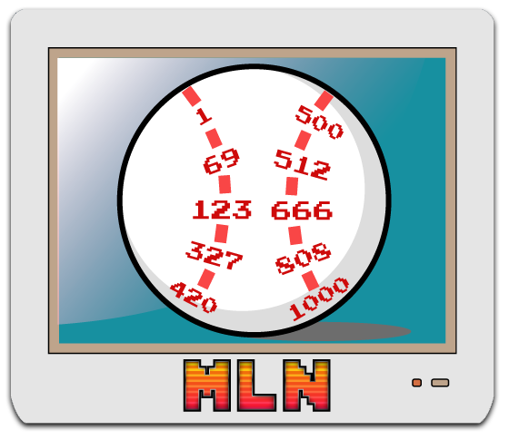

No password, no account - this just remembers the name you type on this device and keeps a starred-player list under it. Anyone typing the same name sees the same list.
Diff for the specific result (1B, 2B, etc.) is compared against the distribution of MLN's historical diffs for that result to determine a contact quality percentile.
Contact quality percentile is then mapped to actual MLB Statcast data to determine the distance percentile within that result.
For each Statcast distance result launch angle (LA) and exit velocity (EV) pairs are found. There is a topped LA (lower) and uppercut LA (higher) and these will differ more for lower contact quality.
Swing #’s diff relative to the Pitch # then determines which of the topped or uppercut LAs is used.
Horizontal spray is determined by the diff of the final digit of pitch/swing. Start with the pitch final digit and determine diff and sign to get to the swing final digit. The further negative this value, the more the batter pulls the ball. The further positive this value, the batter is behind the ball and thus hits to the opposite field. This direction can be overridden if the spray doesn’t make sense for the MLN-predetermined result (e.g. 4-5-3 DP).
Bringing it all together, two batted balls: